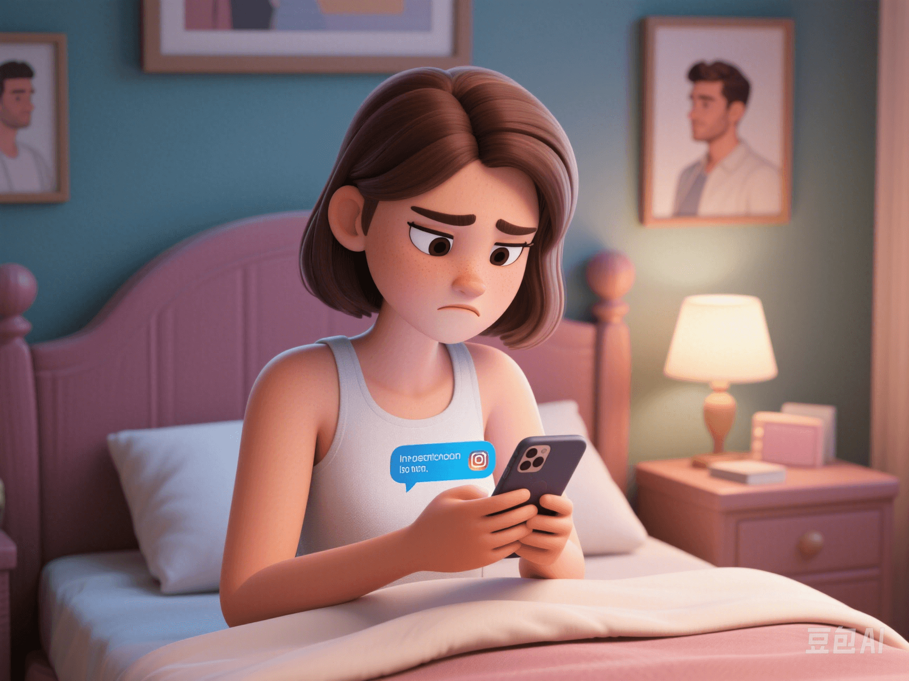

Is Social Media Destroying Our Trust?
PeaceLove.Top Insights :2025-04-12
“It's not that I don't trust you; it's that I don't trust your phone.” - A woman said after discovering her partner's Instagram direct messages. In this era where everyone is online, romantic relationships are no longer limited to real - life scenarios but are seamlessly connected to social platforms. However, behind the phone screen, there is not more intimacy but increasing suspicion, unease, and emotional crises.
📱 Instagram Direct Messages: A Hidden Channel for Flirting
Social platforms were originally designed to connect people, but they have gradually become a breeding ground for emotional infidelity. Especially the direct message function on Instagram is often used as a “flirting testing ground”. For example, sending a late - night message like “How have you been lately?”, liking a selfie of someone from years ago, and having continuous interactions while hiding it from the partner. A survey shows that 38% of emotional infidelity starts from social media contacts, and “visually - oriented” platforms like Instagram and Snapchat are particularly high - risk. “It's just a chat” has become a shield for crossing the line. Many couples or spouses fall into “social media anxiety disorder”, checking phones, looking at chat records, and speculating about the meaning behind the other person's likes.
🎲 Tinder and the Paradox of Choice: Infinite Possibilities, Losing the Present
“Swipe - based” dating apps like Tinder and Tantan reinforce the mindset of “Maybe I deserve better”. Even in a stable relationship, people can't help but wonder, “Is the outside world more exciting?” and “Let me swipe and see who is interested in me?” Psychologists call this the “paradox of choice” - the more options there are, the harder it is for people to be satisfied. In romantic relationships, the “virtual choice pool” provided by social platforms makes it more difficult to make commitments, and avoiding real - world problems becomes an unconscious choice.
🧠 Psychological Mechanisms: Why Do Social Platforms Make Us Anxious?
- Continuous online transparency anxiety: “You're clearly online. Why aren't you replying to my message?” and “Who left that comment for you?” Online activities are constantly monitored, causing psychological burdens and misunderstandings.
- Monitoring weakens trust: The more frequently a person checks their partner's posts, chats, and likes, the more unease accumulates in their heart.
- The social design itself is prone to causing boundary - crossing: Instagram has “stories visible for a limited time” and “close friends only” gray interaction areas. Direct messages are both hidden and difficult to track. This blurred boundary is the enemy of trust.
🕵️ The Trust Dilemma: Should We Check Each Other's Accounts?
Many couples start checking each other's phones and social accounts due to trust issues. On the surface, it seems like transparency, but in fact, it is a compensatory behavior for lack of security.
| Standpoint | Reasons |
|---|---|
| ✅ Support mutual checking | Transparency helps eliminate misunderstandings and prevent deception |
| ❌ Oppose mutual checking | It violates privacy, aggravates anxiety, and trust is not built through control |
The real problem is not whether to check but whether the two have reached a consensus on digital boundaries.
✅ Establishing Trust Rituals in the Digital Age
- Communicate the boundaries of “online intimacy”: Agree on which interactions are acceptable and which are off - limits.
- Establish an open but non - monitoring transparency mechanism: For example, don't actively check each other's phones, but make social accounts visible.
- Have regular “digital disconnection days”: Put down the phones together, go for a walk, read a book, or cook a meal to offset virtual anxiety with real connections.
- Clean up “potential emotional interrupters”: Sort out the contacts and draw a clear line with opposite - sex friends as a sign of respect for each other.
Social media doesn't automatically destroy a relationship, but if there is a lack of clear boundaries and emotional trust, it will mercilessly widen the cracks. True intimacy is not about monitoring but believing that the other person has you in their heart even when they are not by your side. A phone is just a glass screen. Don't let it separate two hearts that should be close.